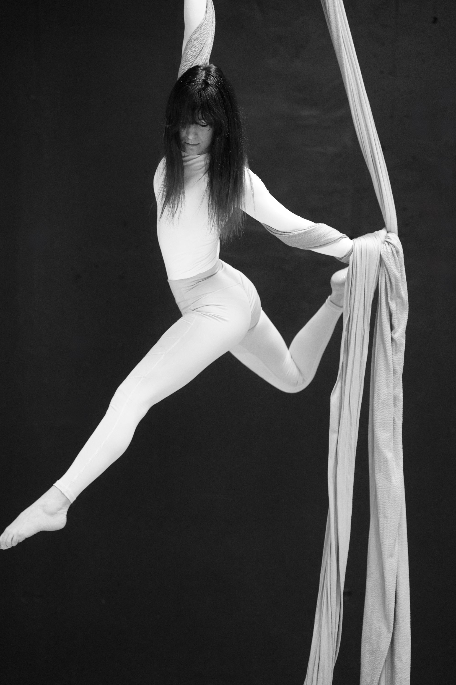

J / 01 · Aerial
Aerial yoga
A talajjóga és a légtorna kombinációja: egy selyem hammock segítségével olyan ászanák is elérhetővé válnak, amelyek talajon több év gyakorlást igényelnének. A fordított testhelyzetek jótékonyak a gerincoszlopnak: távolítják a csigolyákat, leveszik a terhelést, felfrissítik a keringést.
- Trapeze: függeszkedés, húzás, inverzió
- Slow flow: talajközeli, kontrollált, lassú
- öltözet: testhezálló ruha, mezítláb
Oktató · Barkóczy Barbara
